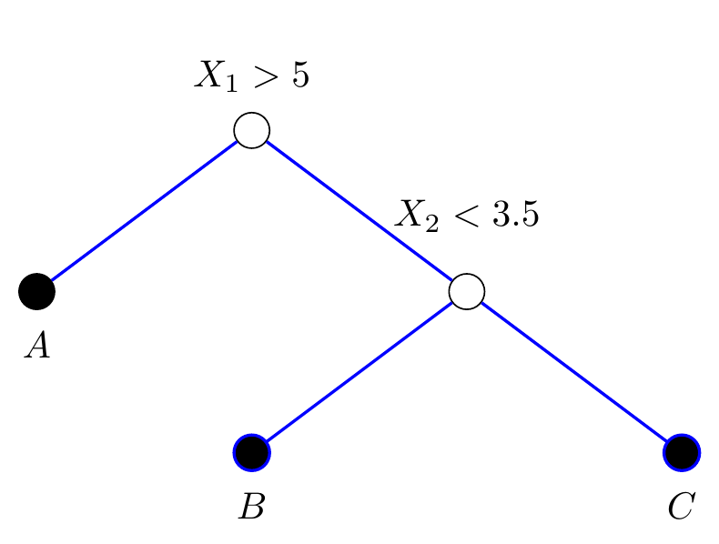
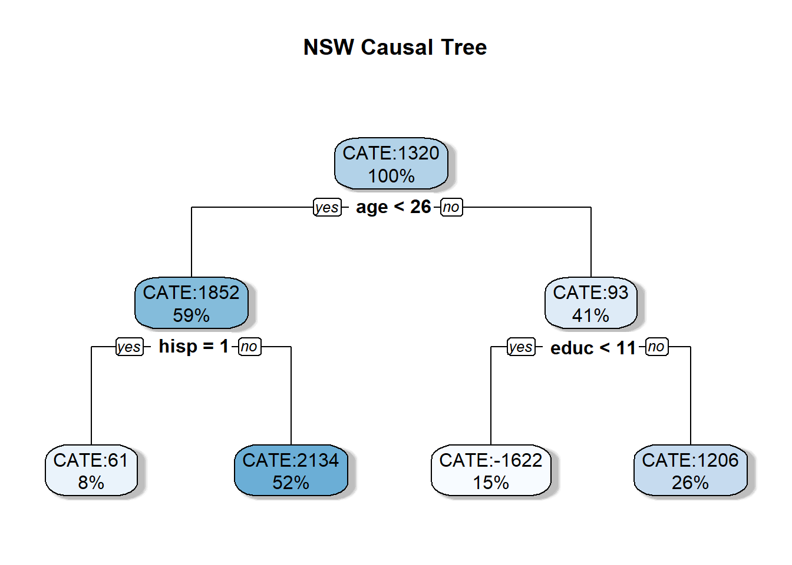

1 Causal Trees and Forests
Traditional causal inference methods such as regression analysis provide excellent capabilities but also face several limitations. First, many conventional methods assume that treatment effects are homogeneous across the population, which is often unrealistic. In practice, the effect of a treatment can vary significantly across different subgroups or individuals, a concept known as ‘treatment effect heterogeneity’. Second, traditional methods struggle with high-dimensional data where the number of covariates is large relative to the sample size. Lastly, the real-world relationships between variables are often non-linear and involve complex interactions that traditional linear models cannot capture adequately. Given these limitations, there is a clear need for non-parametric methods that could flexibly model complex relationships and treatment heterogeneity without imposing strong parametric assumptions. This need motivates the development of machine learning approaches tailored for causal inference such as causal trees and causal forests.
By providing a machine learning approach to handling heterogeneity in treatment effects, causal trees and forests enable researchers and practitioners to draw more targeted and nuanced conclusions from their data, ultimately leading to better-informed decision-making. Specifically of interest is personalised and targeted medicine or policy learning. By modelling treatment effect heterogeneity, there is knowledge of how a particular treatment will impact an individual or a subgroup inside a population. For example, if a medical researcher understands the effect of a medication for a specific subgroup then medical prescription can be personalized. In a policy context, decision-makers could target an intervention or programme towards those who benefit most or those where the benifit exceeds the cost of participation.
Recent research in causal inference has focused on developing methods to estimate treatment effect heterogeneity. This section provides a comprehensive overview of causal trees and forests, including generalized random forest methods. Additionally, these methods are exemplified using the htetree and grf packages available for the R statistical language.
1.1 Causal Trees: Overview and Intuition
To adapt a Classification and Regression Tree (CART) to a causal context, Athey and Imbens (2016) develop the causal tree (CT). If unfirmilar with CART, please consider reading ?@sec-background-cart before proceeding. First, the authors derive a mean square error function allowing trees to identify heterogeneous treatment effects (HTEs). Second, they develop the honesty theorem to ensure desirable asymptotic properties for tree-based estimation of HTEs.
CTs function similarly to CART at a high level by partitioning the data, resulting in purity within child nodes. In a causal context, a better word for purity is homogeneity. Instead of splitting for purity (classification tree) or residual sum of squares (regression tree), the CT partitions a given parent node to create nodes where the conditional average treatment effect (CATE) is the most heterogeneous across the resulting child nodes. Athey and Imbens (2016) develop an an expected mean square error formula, \(\operatorname{EMSE}\) to select splits in the CT. This function introduces a trade-off between maximising the heterogeneity across nodes and minimising the variance of the estimate of the treatment effect within nodes.
There is an intuitive parallel between matching methods and tree methods. Matching methods often match observations based on similarity, usually reduced to a single propensity score as in ?@sec-propensity-scores. Instead, a causal tree will partition the covariate space and pseudo-match similar observations into child nodes, thus creating neighbourhoods where a comparison between treatment and control cases is robust. Using a tree-based algorithm to define a neighbourhood is advantageous because the distance metric is adaptive. By splitting on covariates that maximise HTEs, CTs identify variables and splits that best explain the heterogeneity. Thus the definition of each neighborhood is adapted to the splits which maximise the heterogeneity. The parallel is important to understand as it motivates the calculation of HTEs and the general philosophy of the tree-based estimation of HTEs.
1.1.1 Honesty Criterion and Estimation of Heterogeneous Treatment Effects
Assuming a tree is already built, the CATE for a given terminal node is denoted \(\tau(x; \ell_i)\) and can be estimated simply due to this pseudo-matching property. Recall the calculation of the average treatment effect, denoted \(\tau_{ATE}\), from ?@eq-ate-estimate is the contrast of treatment and control observations in a sample. A CT estimates \(\tau(x; \ell_i)\) separately inside each heterogeneous neighbourhood defined by the tree structure as if it was an independent sample. Hence, across the tree each terminal node, \(\tau(x; \ell_i)\) is indexed as \(\ell_1,\dots,\ell_n\). Across the tree, \(\tau(x; \ell_i)\) is estimated inside each separate terminal node using:
\[ \hat{\tau}(x; \ell_i) = \hat{\mu}(x,1;\ell_i) - \hat{\mu}(x,0;\ell_i), \tag{1}\]
where \(\hat{\mu}\) the estimate of the mean of each treatment group \(t \in \{0,1\}\), with attributes \(x\), contained within a given terminal node \(\ell_i\). In other words, for a given terminal node, \(\hat{\tau}(x;\ell_i)\) is the contrast of the mean value between treatment and control observations. The conditional part of the CATE is implied by the structure of the tree preceding the terminal node where a particular \(\hat{\tau}(x;\ell_i))\) is evaluated. Each preceding split is interpreted as a decision rule, defining the conditions upon which \(\hat{\tau}(x;\ell_i))\) is conditioned.
To achieve asymptotically consistent estimates of the treatment effect, Athey and Imbens (2016) propose an “honest” approach, whereby one sample, \(\mathcal{S}^{tr}\) is used to construct the partition and another, \(\mathcal{S}^{est}\) to estimate treatment effects. In other words, the tree’s structure is created using different data than is used to estimate the treatment effect. If the same data is used for training and estimation, extreme values would likely be grouped together during splitting. During estimation, these extreme values would lead to extreme results in some terminal nodes, leading to spurious results created by the chance outliers in a particular sample. Using honesty, the same extreme values will not appear in those terminal nodes, leading to more consistent results. Intuitively, the causal tree must grow the tree structure and estimate the treatment effect. Honest splitting means that half the sample is used for each task. By anticipating honest splitting leading to lower bias, the splitting rule in Equation 2 focuses on variance only. Honesty is important to guarantee desirable asymptotic properties and prevent overfitting despite the reduction in sample size for splitting and estimation.
For example, Figure 1 is a causal tree trained using \(\mathcal{S}^{tr}\) and \(\hat{\tau}(x;\ell_i)\) is calculated within the shaded terminal nodes \(A\), \(B\), and \(C\) using \(\mathcal{S}^{est}\). For node \(A\), \(\hat{\tau}(x)\) is evaluated by solving Equation 1 with the estimation sample, \(\mathcal{S}^{est}\) falling inside \(A\), resulting in an estimate conditioned on \(X_1>5\). Similarly, for \(\mathcal{S}^{est}\) in \(B\), the \(\hat{\tau}(x)\) is the difference in mean outcome between treatment and control, conditioned on \(X_1<5\) and \(X_2>3.5\).
This approach allows us to observe HTEs between different subgroups which is the motivation for using CTs. It is important to note that subgroups are identified through a data-driven approach rather than prior knowledge. The tree-building process involves splitting the data to discover these groups and estimate their respective \(\hat{\tau}(x)\). This property is very advantageous as there are many applications where there is not sufficient prior knowledge of heterogeneity to perform subgroup analysis. In this sense, causal trees are an exploratory research method with the powerful capabilities to find unknown subgroups.
Note 1: Exploratory and Confirmatory Research
The distinction between exploratory and confirmatory research is important to ensure methods like CTs support good science. Schwab and Held (2020) note that exploratory research seeks to investigate and understand something without a predefined hypothesis, such as searching for HTEs. Some may describe exploratory research with derogatory terms such as “a fishing expedition” or “data dredging”. On the other hand, confirmatory research tests specific hypotheses derived from theory or prior knowledge. A summary is that exploratory research seeks to find “something”, while confirmatory aims to test a specific “thing”. The two are co-dependent, and both have value in research design.
Problems arise when exploratory and confirmatory research are accidentally confused or deliberately merged. Findings from exploratory research may result in false positives, indicating an effect where none exists. This can happen by chance, poor research design, or from completely spurious relationships. The false positive problem worsens as the amount of “exploration” increases, such as assessing more subgroups or using additional analysis methods. Additionally, a researcher may only present the interesting or convenient results leading to “cherry picking” of results. Additionally, the researcher may find the results and then specify the hypothesis as if it was previously known. This can be analogised as throwing darts then drawing the dartboard around the landing spot.
The two work best together in a research cycle where exploratory research generates hypothesis and confirmatory results tests them. Methods such as CTs can generate hypotheses, and confirmatory research can consider research design to test the hypothesis optimally as a part of a pre-registered study plan.
1.1.2 Technical Detail and Splitting Criteria
Typically a mean square error (MSE) function takes a form similar to \(\frac{1}{n}\sum(y_i-\hat{y_i})^2\) where \(y_i\) is the true value, \(\hat{y_i}\) is the estimated value, and \(n\) is the number of observations. Intuitively, the typical mean square error says to make the predicted values the closest to the actual values. The fundamental problem discussed in ?@nte-fundamental means the MSE is not appropriate as we never observe true value of the individual treatment effect (ITE), denoted \(\tau_i\).
Recall from the introduction that a CT splits to maximise heterogeneity across nodes while minimising variance of the treatment effect within nodes. To maximise heterogeneity,the CT will maximise the variance of the predictions Equation 1 across all leaves. More variance across terminal nodes implies that the CT has found more heterogeneity of the treatment effect across the neighbourhoods identified by pseudo-matching. At the same time splits should be made so that the estimates of the treatment effect are robust and so the the splitting rule includes variance penalisation as well.
Putting these elements together, Athey and Imbens (2016) develop an expected mean square error function suitable for an unobserved \(\tau_i\):
\[ \begin{aligned} -\widehat{\operatorname{EMSE}}_\tau & \left(\mathcal{S}^{tr}, N^{est}, \Pi\right) \equiv \alpha \frac{1}{N^{tr}} \sum_{\ell \in \Pi} \hat{\tau}^2\left(x ; \mathcal{S}^{tr}, \Pi\right)\\ &-(1-\alpha)\left(\frac{1}{N^{tr}}+\frac{1}{N^{est}}\right) \cdot \sum_{\ell \in \Pi}\left(\frac{\mathcal{S}_{\mathcal{S}_{\text {treat }}^{tr}}^2(\ell)}{p}+\frac{\mathcal{S}_{\mathcal{S}_{\text {control }}^{tr}}^2(\ell)}{1-p}\right). \end{aligned} \tag{2}\]
Let, - \(\frac{1}{N^{\operatorname{tr}}} \sum_{\ell \in \Pi} \hat{\tau}^2\left(x;\mathcal{S}^{\mathrm{tr}}, \Pi\right)\) be the variance of the treatment effect across nodes in the training sample, \(\mathcal{S}^{\mathrm{tr}}\) . This expression extends Equation 1 across all terminal leaves contained within the tree such that \(\ell_1,\ell_2 \dots\ell_n \in \Pi\).
\(N^\mathrm{tr} \text{ and } N^\mathrm{est}\) be the number of observations in the training and estimation samples.
\(\mathcal{S}^2 (\ell)\) be the variance of the estimate of the treatment effect inside terminal node \(\ell\).
\(p\) be the treatment share expressed as \(N^\mathrm{tr}/ N^\mathrm{est}\).
- \(\alpha\) be a scalar controlling the relative contributions of each part of the equation.
Note 2: Relating back to Intuition
The intuition behind this complex error function is key to understanding causal trees. The first term is the estimated variance of the treatment effect across leaves by definition. Similar to the general definition of variance, it is the sum of the treatment effect across terminal nodes divided by the number of training observations. Each terminal node contributes to this term and an increase in the variance across terminal nodes indicates more heterogeneity of the treatment effect (it is more different across terminal nodes.). The second term is a measure of the variance of the treatment effects within each node.
The logic of the equation means that an increase in treatment effect heterogeneity between terminal nodes will reduce the (negative) of the \(\operatorname{EMSE}\) and an increase in the uncertainty of the node estimates will increase the \(\operatorname{EMSE}\). Thus we can say that the \(\operatorname{EMSE}\) equation will reward creating heterogeneous partitions and heterogeneous terminal nodes while also obtaining appropriate estimates of the treatment effects within each terminal node.
Equation 2 controls the relative strength of the two terms using the \(\alpha\) parameter. A high value of \(\alpha\) means that the variance of the treatment effect is less important. We expect that a higher \(\alpha\) value will increase the depth of the trees as splits will ignore the variance of the estimated treatment effect. Contrastingly, \(\alpha=0\) means that a tree will make no splits as this will make the variance of the treatment effect the lowest. If \(\alpha=1\), then trees are grown very deep and will continue to split until a defined number of minimum observations in each node is reached.
Interestingly, no pruning is required after the CT model is fit as the complexity of trees is implicitly included in Equation 2. If a tree gets too complex, then the variance in the terminal node estimates will increase on unseen data in \(S^{est}\). The second part of Equation 2 punishes the model for an increase in variance in terminal nodes. Thus, the splits that lead to a relatively large variance of the \(\hat{\tau}(x;\ell_i)\) will not be made. This variance penalisation also implies that small leaves will be penalised as small leaves lead to higher variance.
1.1.3 Cross-Validation
Cross validation does play an important role in a causal tree but not to the same extent as in CART. Cross validation is made complex as \(\tau_i\) is unknown and there is not a test/train split present as in many other machine learning applications.
A CT requires honest cross validation so that the tree can discover the structure of the tree using unseen data. Noting that to make a split, the treatment effect must be evaluated in the potential child nodes. There is a cross-validation subset within \(\mathcal{S}^{tr}\) that is used to evaluate Equation 2. In other words, when training the tree to discover its structure, we use the cross validation set, \(\mathcal{S}^{cv}\), to evaluate splits. When doing this honest cross validation, the \(\widehat{\operatorname{EMSE}}\) is the same as in Equation 2 but uses \(\mathcal{S}^{tr,cv}\) instead of \(\mathcal{S}^{tr}\). Note that \(\mathcal{S}^{est}\) is used after the tree is trained for the final estimation inside the terminal nodes.
1.1.4 Implimentation inside R: htetree
A causal tree can be implemented inside R using the htetree package which provides a large library of functions for estimating heterogeneous treatment effects with tree-based machine learning algorithms as well as visualisation.1 This package uses rpart which is a common implementation of CART in R.
My exposition of the CT method does not explore the results of the analysis in depth as this is explored further in the (sec?)-. I perform a basic fit which demonstrates the implementation followed by a simple visualisation which reinforces the intuition of a causal tree.
set.seed(88)
1library(caret)
nsw_split <- createDataPartition(nsw_data$data_id, p=0.7,
list = FALSE)
nsw_train <- nsw_data[nsw_split,]
nsw_est <- nsw_data[-nsw_split,]
2library(htetree)
library(rpart)
3nsw_causalTree <- honest.causalTree(re78 ~ age + educ +
black + hisp + degree + marr,
data = nsw_train,
treatment = nsw_train$treat,
est_data = nsw_est,
est_treatment = nsw_est$treat,
split.Rule = "CT", split.Honest = T,
HonestSampleSize = nrow(nsw_est),
cv.option = "CT", split.alpha = 0.5,
4 minsize = 5)- 1
-
The data is split into the training and estimation set as required to fit an honest tree. This is done using the
createDataPartitionfunction in thecaretpackage. Following a common rule-of-thumb, 70% of the data is used for training and 30% is used for estimation. - 2
-
The
htetreeandrpartpackages are loaded. Both are required to fit anhonest.causalTreeashtetreeusesrpartto fit the model. - 3
-
The parameters of the
honest.causalTreefunction are specified. The process of specifying some of these objects is cumbersome. - 4
-
I have specified
minsize = 5meaning that each node must contain \(5\) or more cases of both treated and control observations. This is set for ease of visualisation not advantageous model fit.
Show the Code to Visualise the Causal Tree.
# This code creates the rpart plot to visualise Figure 1plageholder
library(rpart.plot)
rpart.plot(nsw_causalTree, yesno = 2, shadow.col = "grey",
prefix = "CATE:", main = "NSW Causal Tree")

Show the Code to Visualise the Causal Tree.
# This code creates the rpart plot to visualise Figure placeholder
library(plotly)
age_seq <- seq(min(nsw_data$age), max(nsw_data$age), length.out = 50)
educ_seq <- seq(min(nsw_data$educ), max(nsw_data$educ), length.out = 50)
grid <- expand.grid(age = age_seq,educ = educ_seq)
mean_values <- colMeans(nsw_data, na.rm = TRUE)
other_vars <- names(nsw_data)[!(names(nsw_data) %in%
c("age", "educ", "response"))]
for (var in other_vars) {
grid[[var]] <- mean_values[var]}
grid$response <- predict(nsw_causalTree, newdata = grid)
response_matrix <- matrix(grid$response, nrow = length(educ_seq),
ncol = length(age_seq))
fig <- plot_ly(
x = ~age_seq,
y = ~educ_seq,
z = ~response_matrix,
type = 'surface',
colorscale = list(
c(0, 'rgb(0, 0, 255)'), # Dark blue
c(0.25, 'rgb(0, 255, 255)'),# Cyan
c(0.5, 'rgb(0, 255, 0)')), # Green
showscale = FALSE)
camera <- list(
eye = list(x=-1.6, y=1.6, z=1.1),
center = list(x = 0, y = 0, z = 0),
up = list(x = 0, y = 0, z = 1))
fig <- fig %>% layout(
scene = list(
xaxis = list(title = 'Age'),
yaxis = list(title = 'Education'),
zaxis = list(title = "ITE in $'s"),
camera = camera),
title = '3D Response Surface of Decision Tree: Age vs Education')
figTo produce Figure 3, all other variables have been held constant at their mean values. This is not a problem as the splits involving age and education do not interact with any other covariates.
The CT algorithm has identified heterogeneous subgroups and has calculated \(\hat{\tau}(x)\) for heterogeneous subgroups. However, CT have some similar drawbacks to regular CART models. First, this is a greedy algorithm meaning that splits at earlier points are made without consideration of later splits. Secondly, the algorithm is likely to lead to quite sharp decision boundaries as visualised in Figure 3. In this example, an individual is younger than \(26\), an increase in education from \(10\) to \(11\) results in a completely different \(\hat{\tau}(x)\). This is unrealistic and smoother smooth decision boundaries should better replicate the real world.
1.1.5 Towards a Causal Forest
The next natural development upon causal trees (CT) is a causal forest (CF). Theoretically, a CF is preferable to a CT because ensemble learning methods such as random forest (RF) typically result in superior performance. An ensemble of CTs should smooth sharp decision boundaries, leading to much better estimates of \(\tau(x)\). Consider \(\tau(x)\) to be a continuous CATE function in the context of a causal forest.
Wager and Athey (2018) present a simple implementation of a CF that averages the predictions from many individual CTs, each optimising the \(\operatorname{EMSE}\) from Equation 2. Following the conventional philosophy of random forest as in Brieman (2001), averaging the predictions across diverse trees should lead to improved predictions and smooth decision boundaries. The final prediction from this implementation of a CF is \(\hat{\tau}(x)=\frac{\sum_{b=1}^B\hat{\tau_b}(x)}{B}\) where \(B\) is the number of trees and \(\hat{\tau_b}(x)\) is the CATE calculated by each base tree.
Random forests achieve diverse trees by fitting each tree on a bootstrapped sample of the data. In other words, each tree is grown with different observations, leading to more tree diversity. Fitting individual trees with bootstrapped observations is often referred to as bagging or bootstrap aggregation, which was introduced by Breiman (1996). To further encourage tree diversity, several randomly selected variables are considered at each split to reduce the correlation between trees further. Splitting on different variables at each split prevents strong predictors from always being the initial variables selected, allowing trees to model interactions between other variables.
A CF cannot directly identify subgroups as the overall prediction is an individual treatment effect. The only reason CTs can identify subgroups is because sharp boundaries define heterogeneous groups. In a CT, averaging of predictions should smooth boundaries, thus making subgroups not directly interpretable.
A key contribution of Wager and Athey (2018) is the asymptotic normality of random forests, enabling valid statistical inference. The predictions made by a causal forest are asymptotically normal and unbiased, provided unconfoundedness and common support assumptions are met. The variance predictions from a CF can be estimated using a jackknife procedure developed by Wager, Hastie, and Efron (2014), and the estimation of confidence intervals is possible.
While this implementation of a CF is appealing, there are two downsides. First, the predictions from a CF may be poor as individual CTs may be biased even when using sample splitting due to low sample size or poor tuning of the CT algorithm. Additionally, errors from tree predictions of \(\hat{\tau}(x)\) may be so large that the average across tree predictions is still a poor estimate of the treatment effect. Secondly, computing splits for each tree is very time-consuming, given that Equation 2 is a highly complex function. These weaknesses and a desire for a generalised approach led Athey, Tibshirani, and Wager (2019) to develop the Generalized Random Forest.
1.2 Generalized Random Forests: Overview and Intuition
Causal forests belong to a family of forests called Generalized Random Forests (GRF), introduced by Athey, Tibshirani, and Wager (2019). As suggested in the name, these forests are a generalization of a random forest (RF) suited to diverse applications such as survival analysis or instrumental variable methods. At first, I first provide a simple overview of GRF and omit the details of implementation to simplify my explanation. Then, I introduce GRF on a technical level in Section 1.2.1. However, the following explanation does not replace studying the original paper Athey, Tibshirani, and Wager (2019).
Note 3: Different Implimentations of a Causal Forest
To be very clear, the implementation of a CF in a GRF framework is different than a simple average of trees discussed in Section 1.1.5. More specifically, the implementation of causal forests in Wager and Athey (2018) and Athey, Tibshirani, and Wager (2019) are different. The implementation in the grf software follows Athey, Tibshirani, and Wager (2019). An “honest causal forest” using averages can be implemented with the htetree package. The distinction between the implementations is commonly mistaken in the literature and care must be taken when discussing these methods as the literature continues to develop. Notably, Jawadekar et al. (2023) make the mistake of conflating the two implementations in their paper which aimed to clarify the implimentation of a causal forest.
Recall from Section 1.1 that a causal tree can be analogised to a neighbourhood pseudo-matching method where observations in the same terminal node are “matched” together. Athey, Tibshirani, and Wager (2019) take the neighbourhood analogy further and consider GRF to be an “adaptive locally weighted estimator that first uses a forest to calculate a weighted set of neighbours for each test point, then solve a plug-in version of a [local estimating equation]”. Conceptually, a local estimating equation is like an equation to calculate the treatment effect but optimised locally allowing it to represent HTEs. Different specifications of the GRF framework are implemented by changing the form of the estimating equation.
The forest part of a GRF develops a weighting scheme that defines how similar observations are to each other. A single tree can create groups of observations inside nodes in a neighbourhood characterised by splits leading to the terminal node. For example, a neighbourhood in Figure 1 comprises observations falling into each terminal node. Instead of a binary “in the neighbourhood” or “outside the neighbourhood”, a forest provides a scale of closeness defined by weights. The weights for an arbitrary observation, \(x\), capture the frequency of when that observation falls into the same terminal node as other observations in each tree inside the forest.
To estimate these weights, A GRF uses a modified random forest called GradientForest that incorporates a gradient descent process at each split to maximise the observations’ total “influence” upon the parameter estimates. Each tree is grown to be “deep” using this influence-based splitting rule and a gradient descent sequence. Notably, \(\operatorname{EMSE}\) from Equation 2 does not feature in the GRF algorithm as it is difficult to optimise and does fit the framework of a GRF.
A GRF uses these similarity weights to evaluate a local estimating equation that captures heterogeneity of a treatment effect. Framing random forests as a method to estimate similarity weights contradicts conventional random forests. Typically, a random forest grows many trees and then averages the predictions so that the average of each tree is a much better model than any individual tree. In GRF, each tree is used to compute weights to solve a locally-weighted heterogeneous equation.
1.2.1 Technical Explanation of GRF
Keeping neighbourhood finding in mind, consider that there exists some heterogeneous estimating equation in the form of a localised generalized method of moments (LGMM) estimator, as in Lewbel (2007). This LGMM equation is of the general form:
\[ \mathbb{E}\left[\psi_{\theta(x), \nu(x)} \mid X = x\right] = 0, \tag{3}\]
where \(\psi_{\theta(x), \nu(x)}\) is a moment condition that I refer to as the score function. Specifically, \(\theta(x)\) is an estimator of some desirable quantity such as a conditional mean, quantile or average partial effect and \(\nu\) is a nuisance parameter that exists in some specifications of a GRF. Equation 3 must hold for the local parameter estimates \(\theta(x)\) to be unbiased and consistent.
Note 4: A Quick Primer on Method of Moment Estimation
The Method of Moments (MoM) estimation is a method to estimate parameters in the form of moments. The method consists of equating theoretical moments to sample calculations (sometimes called an empirical moment). For example, the first moment, \(E[X]\) is the mean with the sample calculation \(\hat{\mu}=\frac{1}{n}\sum^n_{i=1} x_i\). Generalized Method of Moments (GMM) extends MoM by incorporating multiple moment conditions and a weighting matrix, allowing for more efficient and robust parameter estimation and when there are more moment conditions than parameters. Local Generalized Method of Moments (LGMM) further extends GMM by applying moment conditions locally, using a weighting matrix to focus on localities of data. This approach can capture heterogeneity and provide parameter estimates that vary smoothly across the sample, making it useful for modelling heterogeneous treatment effects.
The solution to the LGMM estimator is found at some optimisation value. In a CF, the desirable quantity is the CATE. A GRF solves an LGMM estimator using weights, \(\alpha_i(x)\) provided by a GradientForest to obtain a smooth response surface where the global variation in the surface represents treatment effect heterogeneity. The solution to the local equation is
\[ \left( \hat{\theta}(x), \hat{\nu}(x) \right) \in \arg\min_{\theta, \nu} \left\| \sum_{i=1}^n \alpha_i(x) \psi_{\theta, \nu}(O_i) \right\|_2. \tag{4}\]
A GRF can model any quantity of interest identified by a local moment condition. To specify the type of GRF, there must be an empirical version of the local moment equation to optimise. For example, in a conventional regression random forest, this local estimation equation is simply the residual sum of squares (RSS), and so a GRF implementation of a regression random forest is practically identical to the standard implementation as in randomForest.
As the success of this method relies on estimating weights that represent heterogeneity, the forest used to calculate these weights is not a typical RF. As mentioned above, a GradientForest is optimised to create heterogeneous splits while also being computationally efficient. Being a generalized method, this splitting rule can take many forms but should encourage heterogeneity so the resulting weights can represent the heterogeneity of the treatment effect.
To make computation possible, Athey, Tibshirani, and Wager (2019) implement a gradient descent process where the gradient of \(\psi_{\hat{\theta}_P, \hat{\nu}_P}\) is computed once at each split. Let \(\hat{\theta}_P\) and \(\hat{\nu}_P\) be estimates of \(\theta\) and \(\nu\) in parent node, \(P\). Each tree separately performs a gradient descent procedure similar to a Gradient Boosting Machine (GBM) introduced by Friedman (2001). The key difference is that a GBM computes the gradient once per tree and sequentially descends a loss function across the whole ensemble. In a GradientForest, each split is an iteration towards the minimum of the splitting rule, and each tree separately performs gradient descent. In other words, a GBM descends from tree to tree while a GRF descends from split to split within each tree.
The GRF gradient descent process iteratively applies two steps. First is creating what Athey, Tibshirani, and Wager (2019) describe as pseudo-outcomes in a “relabelling step”. Inside each parent node, \(P\), the LGMM estimator in Equation 4 is solved without weights to estimate the desirable quantity \(\hat{\theta}(x)\). 2 Also, the Hessian matrix of \(\psi_{\hat{\theta}_P, \hat{\nu}_P}\) is computed once inside a parent node. This matrix \(A_P\) is the Hessian matrix \(\nabla \psi_{\hat{\theta}_P, \hat{\nu}_P}\) evaluated in \(P\), normalised over the number of observations inside the parent node:
\[ A_P = \frac{1}{|\{i : x_i \in P\}|} \sum_{\{i : x_i \in P\}} \nabla \psi_{\hat{\theta}_P, \hat{\nu}_P}(O_i). \tag{5}\]
To calculate pseudo-outcomes, let \(-\xi^\top\) be a operator that “picks out” the vector of \(\hat{\theta}(x)\) from a the matrix. Pseudo-outcomes are a combination of the score function and the Hessian matrix of the score function evaluated at the current \(\theta(x)\) estimate using observations within the parent node:
\[ \rho_i = -\xi^\top A_P^{-1} \psi_{\hat{\theta}_P, \hat{\nu}_P}(O_i). \tag{6}\]
Pseudo-outcomes are analogous to pseudo-residuals in a GBM. Additionally, pseudo-outcomes are a measure of influence that measures how much the omission of observation \(i\) changes the parameter estimate.3
Viewing these pseudo-outcomes as influence measures, splits that maximise the level of influence in the child nodes should approximately correspond to splitting directly for the desirable quantity. Being a generalized method, the intuitive representation of \(\rho_i\) depends on the nature of the score function. If \(\psi_{\hat{\theta}_P, \hat{\nu}_P}(O_i)\) is the RSS, then splitting to maximise \(\rho_i\) is approximately equivalent to splitting to minimise RSS. If \(\psi_{\hat{\theta}_P, \hat{\nu}_P}(O_i)\) is some equation to represent heterogeneity, then maximising \(\rho_i\) is approximately equivalent to splitting directly for heterogeneity.
Splitting to maximise the total influence across all observations is computationally efficient compared to optimising a complex function such as Equation 2. Specifically, the calculation of the split is normalised over the number of observations in each child node \(C_j\). Let \(\tilde{\Delta}(C_1, C_2)\) be a measure of influence in the child nodes:
\[ \tilde{\Delta}(C_1, C_2) = \sum_{j=1}^2 \frac{1}{|\{i : x_i \in C_j\}|} \left( \sum_{\{i : x_i \in C_j\}} \rho_i \right)^2. \tag{7}\]
The GRF algorithm grows the first of many diverse trees by greedily splitting data. As in Section 1.1.5, each tree uses a bootstrapped sample of data, and each split uses a certain number of randomly selected variables.
Let the set of \(B\) trees inside the forest be indexed as \(b=1,\dots, B\) and let \(L_b(x)\) be the set of observations that fall into the same terminal node as arbitrary value \(x\). Weights \(\alpha_i(x)\) capture the frequency with which the \(i\)th training example falls into the same terminal node as \(x\) such that
\[ \alpha_i(x) = \frac{1}{B} \sum_{b=1}^B \frac{\mathbf{1}\{x_i \in L_b(x)\}}{|L_b(x)|}, \tag{8}\]
where \(\mathbf{1}\) is an indicator function equal to \(1\) if \(x_i\) is in the same node as arbitrary point \(x\) and \(|L_b(x)|\) is the number of observations in the node where \(x\) falls. For every observation where the score function is evaluated, a corresponding weight matrix defines how similar that point is to all other points in the data. As previously mentioned, these weights are used to solve Equation 4 to obtain \(\hat{\theta}(x)\).
1.2.2 Causal Forests in the General Framework
Recall from ?@sec-background-linear that a model describes the linear relationship between the treatment, covariates, and outcome, as in ?@eq-linear-model. Instead, suppose a non-linear relationship exists between covariates and outcomes and heterogeneous treatment effects. This model is stated as
\[ Y=\tau(x)T+f(x)+\epsilon, \tag{9}\]
where \(\tau(x)\) is the CATE and \(f(x)\) is a function describing the relationship between covariates and the outcome. Recall from ?@sec-propensity that the propensity score reduces the dimension of \(f(x)\) to a single propensity score, \(e(x)\). However, a propensity score approach does not allow for HTEs. In the framework of a GRF, \(\tau(x)\) is solved using weights defined by the GradientForest procedure to estimate Equation 3.
Estimating Equation 9 seems simple but is theoretically problematic. Conceptually, a model must “understand” some elements of the data to identify HTEs. First, it must model the effect of the covariates on the outcome and potential interactions between covariates so treatment effects are isolated. Second, it must model the relationships between covariates and the treatment as these relationships drive heterogeneity. Third, it should model the conditional effect of the covariates on the probability of being treated so estimates are not subject to confounding. Finally, it must also estimate weights, \(\alpha_i(x)\), that result in good estimates of the local equation. Using a single model risks “overwhelming” the model, leading to sub-optimal weights and poor treatment effect estimation. To simplify the estimation, a causal forest uses an approach called “local centering” or orthogonalisation, introduced by Robinson (1988). A Robinson transformation will “regress out” the conditional effects of the covariates on the outcome and treatment indicator.
Let \(\mu(x)\) be the conditional outcome such that
\[ \mu(x) = E[Y|X=x]=f(x)+\tau(x)e(x). \tag{10}\]
Subtracting the conditional outcome, \(\mu(x)\), orthogonalises Equation 9:
\[ \begin{aligned} Y&=\tau(x)T+f(x)+\epsilon\\ Y - \mu(x)&=\tau(x)T+f(x)-m(x)+\epsilon\\ Y - \mu(x)&=\tau(x)T+f(x)-(f(x)+\tau(x)e(x))+\epsilon\\ Y - \mu(x)&=\tau(x)(T-e(x))+ \epsilon \end{aligned} \]
In the grf package, the causal_forest function estimates \(\hat{e}^{(-i)}(x)\) and \(\hat{m}^{(-i)}(x)\) using separate regression forests and then plugs the estimates into in the orthogonalised function:
\[ Y -\hat{m}^{(-i)}(x) =\tau(x)(T-\hat{e}^{(-i)}(x))+ \epsilon. \tag{11}\]
The superscript \(^{(-i)}\) indicates that the estimate for \(i\) is made on a sample not including \(i\). Nie and Wager (2021) develop a loss function for treatment effect estimation of this general form. Derived from Equation 11, the score function is
\[ \psi_{\tau}= (Y - \hat{m}^{(-i)}(x) - \tau(T - \hat{e}^{(-i)}(x)))(T - \hat{e}^{(-i)}(x)), \tag{12}\]
with the moment condition defined by: \[ E[Y - \hat{m}^{(-i)}(x) - \tau(T - \hat{e}^{(-i)}(x)))(T - \hat{e}^{(-i)}(x)] = 0. \tag{13}\]
Robinson (1988) shows us that an orthogonalisation approach is theoretically advantageous as noisy estimates of \(\hat{m}^{(-i)}(x)\) and \(\hat{e}^{(-i)}(x)\) will still lead to good estimates of \(\tau(x)\). Particularly, \(\hat{m}^{(-i)}(x)\) and \(\hat{e}^{(-i)}(x)\) can converge at a slower rate but \(\hat{\tau}(x)\) remains robust. Additionally, by specifying \(e(x)\), the CF should be robust to confounding provided that ?@eq-conditional-independence is satisfied.
Finally, the final definition of a causal forest is the optimisation of
\[ \hat{\tau}(x) \in \arg\min_{\tau} \left\| \sum_{i=1}^n \alpha_i(x) (Y - \hat{m}^{(-i)}(x) - \tau(T - \hat{e}^{(-i)}(x)))(T - \hat{e}^{(-i)}(x)) \right\|_2, \tag{14}\]
using weights, \(\alpha_i(x)\), obtained through a GradientForest.
1.2.3 Other Generalised Random Forests Algorithems Inside grf
The grf package provides a range of random forest implementations including causal_forest, survival_forest, instrument_forest, quantile_forest, and probability_forest. There is notable documentation provided on the package Github.
1.3 Application: National Supported Work Data (DONT READ, some things have run into errors which will hopefully be a simple fix. they previously worked fine. )
While the NSW dataset has often been applied in the context of propensity score methods in textbook examples. Seldom has treatment effect heterogeneity been explored. The Causal Tree earlier suggested that age and education may be significant indicators of the success of the programme for individuals. Using the grf package, the model is fit using all covariates including income in earlier years.
library('grf')
library(dplyr)
covars <- nsw_data %>% select(age, educ, black, hisp, marr, degree, re74)
nsw_cf_model <- causal_forest(
X = covars,
Y = as.vector(nsw_data$re78),
W = as.vector(nsw_data$treat),
tune.parameters = "all",
seed = 88)
nsw_ite_predict <-predict(nsw_cf_model, estimate.variance = TRUE)
nsw_ite <- nsw_ite_predict$predictionsinstall.packages('grf')
library('grf')
nsw_cf_model <- causal_forest(
1 X = nsw_covariates,
Y = nsw_dependant,
W = nsw_treatment,
2 tune.parameters = "all")
3 nsw_ite_predict <-predict(nsw_cf_model, estimate.variance = TRUE)
4 nsw_ite <- nsw_ite_predict$predictions- 1
-
The observed covariates, dependant variable, and treatment variable are specified as
X,Y, andWrespectively. Note that these will be in vector form such asas.vector(). - 2
-
The
causal_forest()function will tune forsample.fraction,mtry,min.node.size,honesty.fraction,honesty.prune.leaves,alpha, andimbalance.penalty. These can be manually specified but that is beyond the scope of this book. Further information can be obtained inside R using?causal_forest. - 3
-
Predictions are made from the
nsw_cf_modelobject andestimated.varianceis setTRUEbecause reason. - 4
-
The ITE are extracted from the
nsw_ite_predictobject.
Using the the Causal Forest model, nsw_cf_model, a response surface can be displayed as in Figure 3. As before, this is estimated holding all other variables at their mean. This visualisation is somewhat dubious as the various trees inside the forest will have split on other variables as well as education and age so holding them constant somewhat undermines the model structure. However, for the purposes of demonstration, this visualisation is helpful regardless.
Show the Code to Visualise the Causal Forest.
library(plotly)
library(grf)
grid <- expand.grid(age = age_seq,educ = educ_seq)
mean_values <- colMeans(nsw_data, na.rm = TRUE)
other_vars <- names(nsw_data)[!(names(nsw_data) %in% c("age", "educ",
"response","ite", "re78","re75", "data_id","treat"))]
for (var in other_vars) {
grid[[var]] <- mean_values[var]
}
grid$predictions <- predict(nsw_cf_model, newdata = grid)
response_matrix <- matrix(as.numeric(unlist(grid$predictions)),
nrow = length(educ_seq), ncol = length(age_seq))
fig <- plot_ly(
x = ~age_seq,
y = ~educ_seq,
z = ~response_matrix,
type = 'surface',
colorscale = list(
c(0.25, 'rgb(0, 255, 255)')
),
showscale = FALSE
)
camera <- list(
eye = list(x=-1.7, y=-1.7, z=1.7),
center = list(x = 0, y = 0, z = 0),
up = list(x = 0, y = 0, z = 1)
)
fig <- fig %>% layout(
scene = list(
xaxis = list(title = 'Age'),
yaxis = list(title = 'Education'),
zaxis = list(title = "ITE in $'s"),
camera = camera
),
title = '3D Response Surface of Causal Forest: Age vs Education'
)
figWhile the response surface is still sharp in some places, there is a visible gradient showing the increase
Additionally, using the causal forest, the estimates of the average treatment effect seem more likely. The effect is predicted to be positive for all individuals when holding all other individuals at their mean values. However, the general relationship and heterogeneity in the data is the same. The Causal Forest finds that increasing age and increasing education results in a higher individual treatment effect.
# library(ggplot2)
# library(ggthemes)
# library(scales)
# ggplot(nsw_data) +
# aes(x = as.factor(degree), y = ite) +
# geom_boxplot()# ggplot(nsw_data) +
# aes(x = as.factor(marr), y = ite) +
# geom_boxplot()# ggplot(nsw_data) +
# aes(x = as.factor(black), y = ite) +
# geom_boxplot()# ggplot(nsw_data) +
# aes(x = as.factor(hisp), y = ite) +
# geom_boxplot()Show the Code
library(ggplot2)
library(ggthemes)
library(scales)
ggplot(nsw_data, aes(x = educ, y = nsw_ite)) +
geom_point(size=2) +
labs(
title = "Visualising Treatment Effect Heterogeneity",
subtitle = "Years of Education vs. Estimated Individual Treatment Effect",
y = "Individual Treatment Effect ($ Increase in Earnings in 1978)",
x = "Years of Education") +
geom_rangeframe() +
theme_tufte(base_size = 14)+
theme(
plot.title = element_text(size = 20),
plot.subtitle = element_text(size = 15),
legend.position = "bottom") +
scale_x_continuous(breaks = pretty_breaks(n = 15)) +
scale_y_continuous(breaks = pretty_breaks(n = 10))Show the Code
library(ggplot2)
library(ggthemes)
library(scales)
ggplot(nsw_data, aes(x = age, y = nsw_ite, color = as.factor(degree))) +
geom_point(size=2) +
labs(
title = "Visualising Treatment Effect Heterogeneity",
subtitle = "Age of Participant vs. Estimated Individual Treatment Effect",
y = "Individual Treatment Effect ($ Increase in Earnings in 1978)",
x = "Age (Years)") +
geom_rangeframe() +
theme_tufte(base_size = 14)+
theme(
plot.title = element_text(size = 20),
plot.subtitle = element_text(size = 15),
legend.position = "bottom") +
scale_x_continuous(breaks = pretty_breaks(n = 15)) +
scale_y_continuous(breaks = pretty_breaks(n = 10)) +
scale_color_manual("Bachelor Degree Completion:",values = c("1" = "red",
"0" = "black" ),
labels = c("1" = "Degree","0" = "No Degree"))This result makes sense heuristically for a couple of reasons. Perhaps older individuals are more likely to appreciate stable employment opportunities, leading to more engagement with the programme. (lalonde?) notes that older and more educated poeple completed the programme at a higher rate demonstrating their commitment. Perhaps the training programme taught skills this demographic was disproportionately lacking. Perhaps more educated individuals experience higher treatment effects due to better job readiness and adaptability to new training. Perhaps different demographics suffered from unemployment for different reasons leading to heterogeneous results.
I should remind readers of an important caveat, these results are found through exploratory research and are not confirmatory. However, they are an indication that there is substantial heterogeneity present which further research can confirm the results of. This further research likely requires a different research design to isolate the heterogeneity caused by age and education. This result could be entirely spurious or due to an unobserved confounders.
Perhaps the older demographics were motivated workers but unemployed/underemployed because of structural changes in the economy such as the general decline in manufacturing jobs in the late 1970’s in the United States. Meanwhile younger applications may have personal reasons for unemployment/underemployment meaning they were less driven or motivated to to obtain higher earning jobs after the programme. While this speculation is unlikely to be the cause of this heterogeneity, it does reinforce the idea that exploratory research should not be confused wth confirmatory research. There are many hypothetical confounding relationships that exist which can be speculated upon but the key idea is that the research design does not control for some of these reasons and so we cannot conclude from the exploratory finding that there is a confirmation increased age or education leading to higher treatment effects in work programmes.
Athey, Susan, and Guido Imbens. 2016. “Recursive partitioning for heterogeneous causal effects.” Proceedings of the National Academy of Sciences of the United States of America 113 (27): 7353–60. https://doi.org/10.1073/pnas.1510489113.
Athey, Susan, Julie Tibshirani, and Stefan Wager. 2019. “Generalized random forests.” Annals of Statistics 47 (2): 1179–1203. https://doi.org/10.1214/18-AOS1709.
Breiman, Leo. 1996. “Bagging predictors.” Machine Learning 24: 123–40. https://doi.org/10.3390/risks8030083.
Brieman, Leo. 2001. “Random Forests.” Machine Learning 45: 5–32. https://doi.org/https://doi.org/10.1023/A:1010933404324.
Friedman, Jerome H. 2001. “Greedy Function Approximation: A Gradient Boosting Machine.” The Annals of Statistics 29 (5): 1189–1232. https://www.jstor.org/stable/2699986.
Jawadekar, Neal, Katrina Kezios, Michelle C. Odden, Jeanette A. Stingone, Sebastian Calonico, Kara Rudolph, and Adina Zeki Al Hazzouri. 2023. “Practical Guide to Honest Causal Forests for Identifying Heterogeneous Treatment Effects.” American Journal of Epidemiology 192 (7): 1155–65. https://doi.org/10.1093/aje/kwad043.
Lewbel, Arthur. 2007. “A local generalized method of moments estimator.” Economics Letters 94 (1): 124–28. https://doi.org/10.1016/j.econlet.2006.08.011.
Nie, X., and S. Wager. 2021. “Quasi-oracle estimation of heterogeneous treatment effects.” Biometrika 108 (2): 299–319. https://doi.org/10.1093/biomet/asaa076.
Robinson, P.m. 1988. “Root-N-Consistent Semiparametric Regression.” The Econometric Socieity 56 (4): 931–54. https://www.jstor.org/stable/1912705.
Schwab, Simon, and Leonhard Held. 2020. “Different worlds Confirmatory versus exploratory research.” Significance 17 (2): 8–9. https://doi.org/10.1111/1740-9713.01369.
Wager, Stefan, and Susan Athey. 2018. “Estimation and Inference of Heterogeneous Treatment Effects using Random Forests.” Journal of the American Statistical Association 113 (523): 1228–42. https://doi.org/10.1080/01621459.2017.1319839.
Wager, Stefan, Trevor Hastie, and Bradley Efron. 2014. “Confidence intervals for random forests: The jackknife and the infinitesimal jackknife.” Journal of Machine Learning Research 15: 1625–51. https://arxiv.org/abs/1311.4555.
Weisberg, Sanford, and R D Cook. 1982. Residuals and Influence in Regression. Chapman & Hall.
It appears to me that the
htetreepackage has a more comprehensive implimentation compared to the originalcausalTreepackage created by Susan Athey which is hosted on Github.↩︎The estimation of \(\hat{\theta}(x)\) in \(P\), cannot use weights, \(\alpha_i(x)\) as these have not been estimated yet.↩︎
Note this step aligns with the general form of the influence function. Specifically from Weisberg and Cook (1982): \(I(z) = -H_{\hat{\theta}}^{-1} \nabla_{\theta} \Psi(z, \hat{\theta})\). \(I(z)\) is the influence function for the point \(z\). \(H_{\hat{\theta}}^{-1}\) is the inverse of the Hessian matrix of the log-likelihood (or another objective function). \(\nabla_{\theta} \Psi(z, \hat{\theta})\) is the gradient of the function \(\Psi\).↩︎